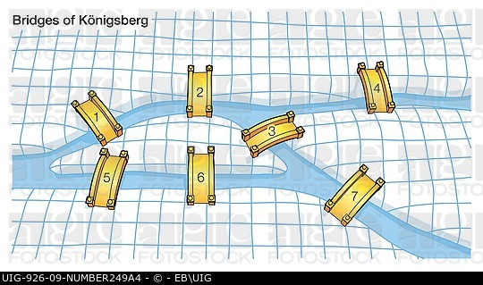
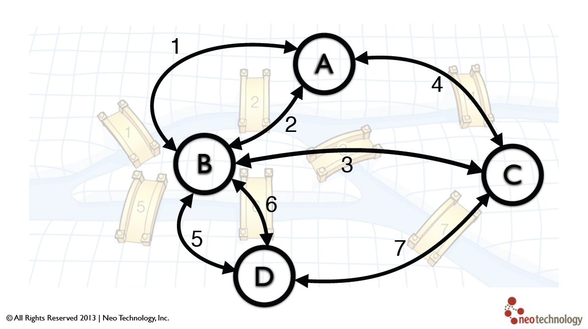

What is the origin?
the origin of graph theory.
柯尼斯堡七橋問題
是圖論中的著名問題。這個問題是基於一個現實生活中的事例：當時東普魯士柯尼斯堡（今日俄羅斯加里寧格勒）市區跨普列戈利亞河兩岸，河中心有兩個小島。小島與河的兩岸有七條橋連接。 在所有橋都只能走一遍的前提下，如何才能把這個地方所有的橋都走遍？ 資料來源:http://akilleenkanta.blogspot.tw/2014_08_01_archive.html我們看看簡化一點的圖
 資料來源:http://www.britannica.com/topic/Konigsberg-bridge-problem用圖論來表示
 資料來源: http://semanticommunity.info/Data_Science/Graph_Databases/Tutorial萊昂哈德·歐拉
數學家歐拉(Euler, 1707-1783)把問題的實質歸於一筆畫問題，即判斷一個圖是否能夠遍歷完所有的邊而沒有重複，而柯尼斯堡七橋問題則是一筆畫問題的一個具體情境。 1736年嚴格地證明了上述哥尼斯堡七橋問題無解，並且由此開創了圖論的典型思維方式及論證方式 資料來源:https://zh.wikipedia.org/zh-tw/萊昂哈德·歐拉
資料來源:https://zh.wikipedia.org/zh-tw/萊昂哈德·歐拉